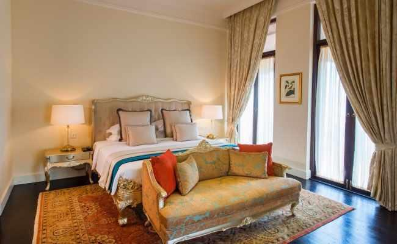
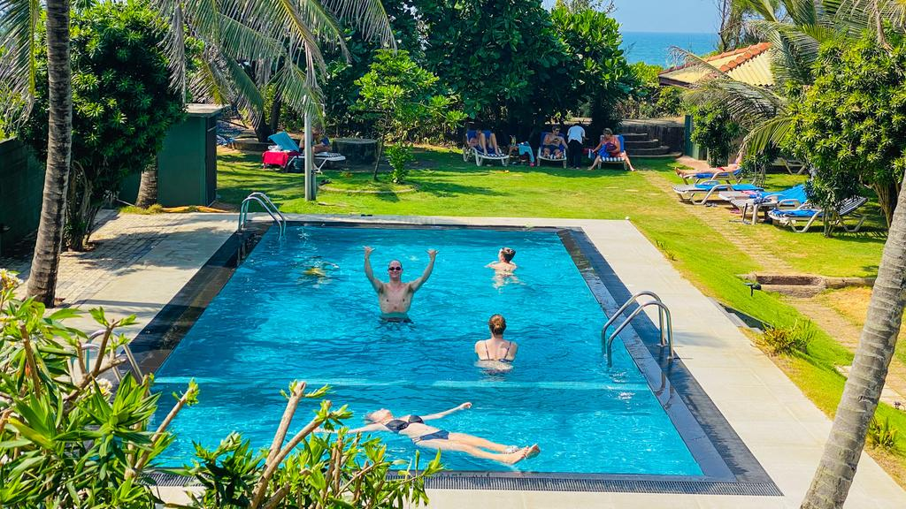

Sri Lanka’s iconic landmark, The Aurora Hotel, is situated in the heart of Colombo, along the seafront and facing the famous Galle Face Green.The Aurora Hotel embraces its rich history and legendary traditions, utilizing them to create engaging, immersive experiences that resonate with old and new generations of travelers alike. No visit to Sri Lanka is complete without staying at this majestic hotel, built in 1965 and recently restored back to its former glory. Special Offers
|  |
 | |
ROOMS & SUITES For generations, our guests have come back time and time again, seduced by the nostalgic charm of The Aurora Hotels. |
EVENTS & MEETINGS With an iconic history, location and standard of service, The Aurora Hotel is the city’s venue of choice for outstanding meetings and events. |
EXPERIENCES Spa, travel, swimming pool, fitness and many more experiences await. |
Our values"Our Guests enjoy the best of everything"The finest star class hotel in Sri Lanka with the best of dinning, accommodation and entertainment facilities. This 450 roomed beauty is located facing the foaming ripples of the Indian Ocean and remains to be one of the best hotels in Sri Lanka. Step-in to be lost in unearthly cuisines, cosy hideouts, heavenly surrounding and the best of services, which other hotels in Sri Lanka could not offer. Aurora Hotel Sri Lanka; one of the finest hotels in Sri Lanka is not only the best place to relax, eat and indulge, but is also the finest place to celebrate. Come! Delight & breathe the air of luxury at the heart of Colombo. |
Anil Jeet
"Awesome location,excellent choice of food across a diverse range of cuisine, courteous and friendly staff, strong systems in place, fast check-in and checkout ..all in all a home away from home experience.,"
June 2016
M. Mendis
"They offer delicious food, good customer service. Good surroundings. Front facing the Galle Face green. Located in an urban area in Sri Lanka. Luxury hotel with good food. Perfect location for weddings as well."
July 2016